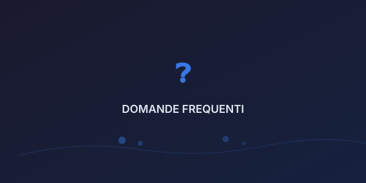

🍪 Utilizziamo cookie per migliorare la tua esperienza. Cookie Policy.
Qui trovi le risposte a tutto quello che ti sei sempre chiesto su soldi, debito e investimenti.

Niente giri di parole. Le risposte sono chiare, pratiche e scritte nella tua lingua.
TreasuryWorks è il tuo laboratorio di finanza personale. Usiamo le metafore dell'officina meccanica per spiegare concetti finanziari complessi in modo semplice e pratico. Niente termini tecnici, niente fuffa — solo quello che ti serve davvero.
Funzionano direttamente nel tuo browser. Nessun dato viene inviato a nessun server. Inserisci i tuoi numeri, clicca "Calcola" e ottieni il risultato. Niente registrazione, niente email, niente tracciamento.
Assolutamente sì! TreasuryWorks è nato proprio per chi parte da zero. I nostri articoli partono dalle basi e i calcolatori guidano passo passo. Non serve nessuna conoscenza pregressa.
Pubblichiamo nuovi articoli regolarmente, circa una volta a settimana. Ci trovi anche su YouTube (93+ video), Instagram, TikTok e Telegram per contenuti quotidiani.
Tutto ciò che fai sul sito resta nel tuo browser. Non raccogliamo dati personali, non usiamo cookie di profilazione (solo quelli tecnici essenziali) e non condividiamo nulla con terze parti.
Sì, al 100%. Blog, strumenti, calcolatori — tutto gratuito, per sempre. Potremmo in futuro creare contenuti premium (corsi, guide avanzate), ma il cuore di TreasuryWorks resterà sempre gratuito.
Usa il modulo nella pagina Contatti, scrivici su Telegram, oppure lascia un commento sotto qualsiasi video YouTube. Rispondiamo a tutti!
No. I contenuti sono di tipo educativo e generale. Ogni situazione finanziaria è diversa: per consulenze personalizzate, ti consigliamo di rivolgerti a un professionista abilitato (consulente finanziario iscritto all'albo OCF).
Qui trovi le risposte a tutto quello che vorresti sapere sul denaro — senza giri di parole.
Seleziona una domanda per vedere la risposta. Nessun giudizio, solo fatti.
È lo studio di come le emozioni, le convinzioni e i bias cognitivi influenzano le nostre decisioni finanziarie.
In pratica: il 90% delle scelte che prendi con i soldi non è razionale. La psicologia del denaro ti aiuta a capire perché.
La regola del 50/30/20 è un ottimo punto di partenza:
Adattala alla tua situazione. Se guadagni poco, parti dal 10% — l'importante è cominciare.
Entrambi, ma in momenti diversi:
Con pochi soldi puoi iniziare con:
L'importante è iniziare presto: il tempo è il tuo miglior alleato grazie all'interesse composto.
Il rischio esiste, ma va contestualizzato:
Dipende dal tuo profilo di rischio:
Probabilmente stai cadendo in una di queste trappole:
Soluzione: regola delle 24 ore. Vuoi qualcosa? Aspetta un giorno. Se ancora lo vuoi, compratelo.
Il confronto è il ladro della felicità finanziaria. Ricorda:
Assolutamente sì. L'ansia finanziaria è la più comune in assoluto:
Alcuni lavori cambieranno, altri spariranno, ne nasceranno di nuovi. La chiave:
Non temere l'IA — usala.
Le 5 competenze più richieste nel 2026:
Scrivimela nei commenti o nei messaggi privati. Potrebbe diventare il prossimo articolo del blog!
🍪 Utilizziamo i cookie per migliorare la tua esperienza. Continuando la navigazione accetti la nostra Privacy Policy.